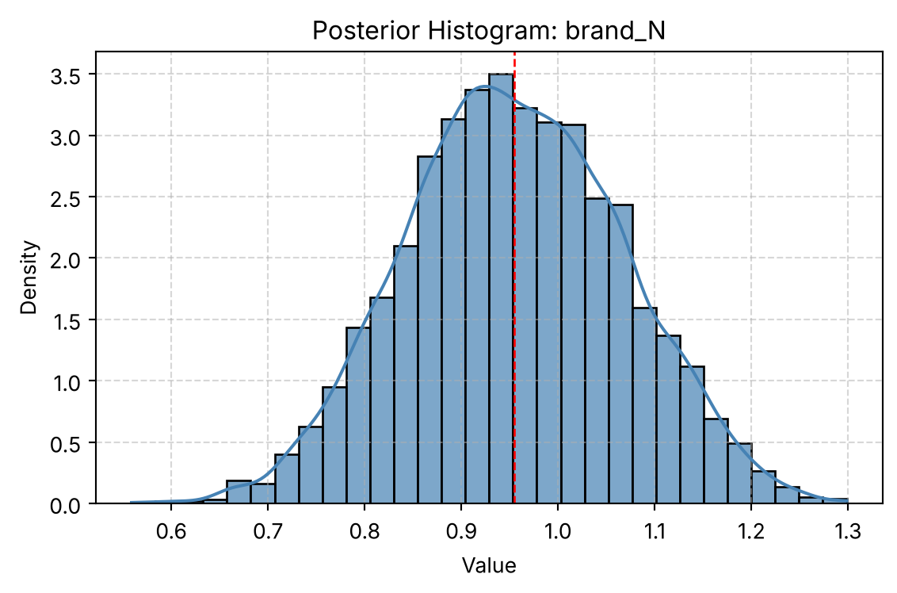

Simulation study comparing MLE and Bayesian MCMC estimates of subscription choice parameters.
Author
Tweety Chang
Published
May 2025
Simulation Results
Question: Can maximum likelihood and Bayesian estimation recover known subscription preferences from simulated choices?
Analysis: Simulated 100 respondents completing 10 choice tasks each, with three alternatives per task. Fit a multinomial logit model with MLE and Metropolis–Hastings MCMC.
Result: The final comparison reports price coefficients of −0.0995 (MLE) and −0.0997 (MCMC), close to the simulation input of −0.1000.
Scope: There are 1,000 simulated choices and 3,000 alternative rows. Estimator agreement checks this simulation; it does not validate real consumer demand or a live pricing policy.
This project explores two methods for estimating the MNL model: (1) via Maximum Likelihood, and (2) via a Bayesian approach using a Metropolis-Hastings MCMC algorithm.
1. Likelihood for the Multi-nomial Logit (MNL) Model
Suppose we have \(i=1,\ldots,n\) consumers who each select exactly one product \(j\) from a set of \(J\) products. The outcome variable is the identity of the product chosen \(y_i \in \{1, \ldots, J\}\) or equivalently a vector of \(J-1\) zeros and \(1\) one, where the \(1\) indicates the selected product. For example, if the third product was chosen out of 3 products, then either \(y=3\) or \(y=(0,0,1)\) depending on how we want to represent it. Suppose also that we have a vector of data on each product \(x_j\) (eg, brand, price, etc.).
We model the consumer’s decision as the selection of the product that provides the most utility, and we’ll specify the utility function as a linear function of the product characteristics:
\[ U_{ij} = x_j'\beta + \epsilon_{ij} \]
where \(\epsilon_{ij}\) is an i.i.d. extreme value error term.
The choice of the i.i.d. extreme value error term leads to a closed-form expression for the probability that consumer \(i\) chooses product \(j\):
A clever way to write the individual likelihood function for consumer \(i\) is the product of the \(J\) probabilities, each raised to the power of an indicator variable (\(\delta_{ij}\)) that indicates the chosen product:
We will simulate data from a conjoint experiment about video content streaming services. We elect to simulate 100 respondents, each completing 10 choice tasks, where they choose from three alternatives per task. For simplicity, there is not a “no choice” option; each simulated respondent must select one of the 3 alternatives.
Each alternative is a hypothetical streaming offer consistent of three attributes: (1) brand is either Netflix, Amazon Prime, or Hulu; (2) ads can either be part of the experience, or it can be ad-free, and (3) price per month ranges from $4 to $32 in increments of $4.
The part-worths (ie, preference weights or beta parameters) for the attribute levels will be 1.0 for Netflix, 0.5 for Amazon Prime (with 0 for Hulu as the reference brand); -0.8 for included adverstisements (0 for ad-free); and -0.1*price so that utility to consumer \(i\) for hypothethical streaming service \(j\) is
where the variables are binary indicators and \(\varepsilon\) is Type 1 Extreme Value (ie, Gumble) distributed.
The following code provides the simulation of the conjoint data.
NoteSimulating the Data
import numpy as npimport pandas as pdfrom itertools import productnp.random.seed(123)# Attribute Levels brand_levels = ["N", "P", "H"] ad_levels = ["Yes", "No"] price_levels = np.arange(4, 33, 4) # All Possible Profiles profiles = pd.DataFrame(list(product(brand_levels, ad_levels, price_levels)), columns=["brand", "ad", "price"])# Part-Worth Utilities b_util = {"N": 1.0, "P": 0.5, "H": 0.0} a_util = {"Yes": -0.8, "No": 0.0} price_util =lambda p: -0.1* p # Simulation Parameters n_peeps =100n_tasks =10n_alts =3# Simulate One Respondent’s Data def simulate_one(respondent_id: int) -> pd.DataFrame: tasks = []for task_no inrange(1, n_tasks +1): dat = profiles.sample(n=n_alts).copy() dat.insert(0, "task", task_no) dat.insert(0, "resp", respondent_id)# Deterministic utility dat["v"] = ( dat["brand"].map(b_util)+ dat["ad"].map(a_util)+ price_util(dat["price"]) )# Gumbel-distributed noise e =-np.log(-np.log(np.random.uniform(size=n_alts))) dat["u"] = dat["v"] + e# Determine choice dat["choice"] = (dat["u"] == dat["u"].max()).astype(int) tasks.append(dat)return pd.concat(tasks, ignore_index=True)# Simulate All Respondentsconjoint_data = pd.concat( [simulate_one(i) for i inrange(1, n_peeps +1)], ignore_index=True)# Keep Only Observable Data conjoint_data = conjoint_data[["resp", "task", "brand", "ad", "price", "choice"]]# Display Result Summary rows, cols = conjoint_data.shapeprint(f"The simulated dataset contains {rows} rows and {cols} columns "f"({n_peeps} respondents × {n_tasks} tasks × {n_alts} alternatives).")# Peek at Data print(conjoint_data.head())
The simulated dataset contains 3000 rows and 6 columns (100 respondents × 10 tasks × 3 alternatives).
resp task brand ad price choice
0 1 1 P Yes 12 0
1 1 1 N No 24 0
2 1 1 P No 12 1
3 1 2 H No 12 0
4 1 2 P Yes 24 0
3. Preparing the Data for Estimation
The “hard part” of the MNL likelihood function is organizing the data, as we need to keep track of 3 dimensions (consumer \(i\), covariate \(k\), and product \(j\)) instead of the typical 2 dimensions for cross-sectional regression models (consumer \(i\) and covariate \(k\)). The fact that each task for each respondent has the same number of alternatives (3) helps. In addition, we need to convert the categorical variables for brand and ads into binary variables.
Each task_id represents a choice task with three alternatives. For example, task_id = 0 (resp = 1, task = 1) includes three options from brands N, H, and P, all with ads and different prices. The first row (brand = N, price = 28) has choice = 1, indicating it was selected. Dummy variables for brand and ad presence are created, with Hulu and ad-free as baselines. The data is now formatted for model estimation.
4. Estimation via Maximum Likelihood
NoteSimulating the Data
MLE Coefficient
Std. Error
95% CI Lower
95% CI Upper
brand_N
0.941195
0.114229
0.717306
1.165084
brand_P
0.501616
0.120818
0.264813
0.738419
ad_yes
-0.731994
0.088559
-0.905571
-0.558418
price
-0.099480
0.006357
-0.111941
-0.087020
The MLE estimates are:
brand_N: 0.94
brand_P: 0.50
ad_yes: -0.73
price: -0.099
Standard errors range from 0.006 to 0.12, and all 95% confidence intervals exclude zero. The model converged successfully and parameters were estimated with high precision.
5. Estimation via Bayesian Methods
NoteSimulating the Data
Posterior Mean
Posterior Std
95% CI Lower
95% CI Upper
brand_N
0.954482
0.111946
0.737799
1.172539
brand_P
0.506766
0.112751
0.285853
0.728708
ad_yes
-0.732992
0.088405
-0.910828
-0.566985
price
-0.099719
0.006344
-0.112362
-0.087510
The posterior means are:
brand_N: 0.95
brand_P: 0.50
ad_yes: -0.74
price: -0.100
Posterior standard deviations closely match the MLE standard errors (within ±0.001). The 95% credible intervals are nearly identical to the MLE confidence intervals. These results reflect strong agreement between the two methods given the large sample size and weakly informative priors.

Posterior Histogram for brand_N
The posterior histogram is approximately normal and centered near 0.95. The distribution is symmetric and unimodal, with most density between 0.75 and 1.15. This indicates a well-identified parameter with low uncertainty.
Trace Plot for brand_N
The trace plot shows consistent sampling around a stable mean with no visible drift or trends. The values fluctuate tightly across the 10,000 post-burn-in iterations, suggesting good mixing and convergence of the Metropolis-Hastings sampler.
NoteSimulating the Data
Bayes Mean
Bayes Std. Dev.
Bayes CI Lower
Bayes CI Upper
MLE Mean
MLE Std. Error
MLE CI Lower
MLE CI Upper
brand_N
0.954482
0.111946
0.737799
1.172539
0.941195
0.114229
0.717306
1.165084
brand_P
0.506766
0.112751
0.285853
0.728708
0.501616
0.120818
0.264813
0.738419
ad_yes
-0.732992
0.088405
-0.910828
-0.566985
-0.731994
0.088559
-0.905571
-0.558418
price
-0.099719
0.006344
-0.112362
-0.087510
-0.099480
0.006357
-0.111941
-0.087020
The Bayesian posterior means closely align with the MLE point estimates across all four parameters. Differences are minimal:
brand_N: Posterior mean is 0.95; MLE is 0.94. Both intervals fully overlap.
brand_P: Posterior mean is 0.51 vs. MLE of 0.50.
ad_yes: Both methods estimate the effect around -0.73, with nearly identical uncertainty.
price: Posterior mean is -0.0997; MLE is -0.0995, with near-identical intervals.
Posterior standard deviations match MLE standard errors within 0.002 across all parameters. Given the large sample and weak priors, the Bayesian and MLE results are functionally equivalent and reinforce the same conclusions: consumers prefer Netflix and Prime, dislike ads, and are price sensitive.
6. Discussion
If this were real data, the parameter estimates would reveal consumers’ underlying preferences.
β_Netflix > β_Prime implies that, all else equal, consumers prefer Netflix to Prime Video. This reflects a higher perceived utility from Netflix’s offering.
β_price < 0 is consistent with economic theory: as price increases, utility decreases, making the product less likely to be chosen.
The direction and magnitude of all estimates are reasonable. Consumers dislike ads, show brand preferences, and are price-sensitive—patterns expected in digital subscription markets.
To simulate or estimate a multi-level MNL model, we must account for individual differences in preferences. Unlike the standard MNL model, which assumes a single set of coefficients shared by all respondents, a hierarchical model allows each respondent to have their own set of parameters.
Key changes: Instead of using one fixed β, assign each respondent a personal βₖ drawn from a population distribution: [ _i (, ) ]
Estimation:
Estimate both the respondent-level βᵢs and the population-level parameters (μ, Σ). This requires hierarchical modeling techniques, often implemented via Bayesian MCMC or mixed logit estimation.
This approach better reflects real-world data by capturing preference heterogeneity across individuals.